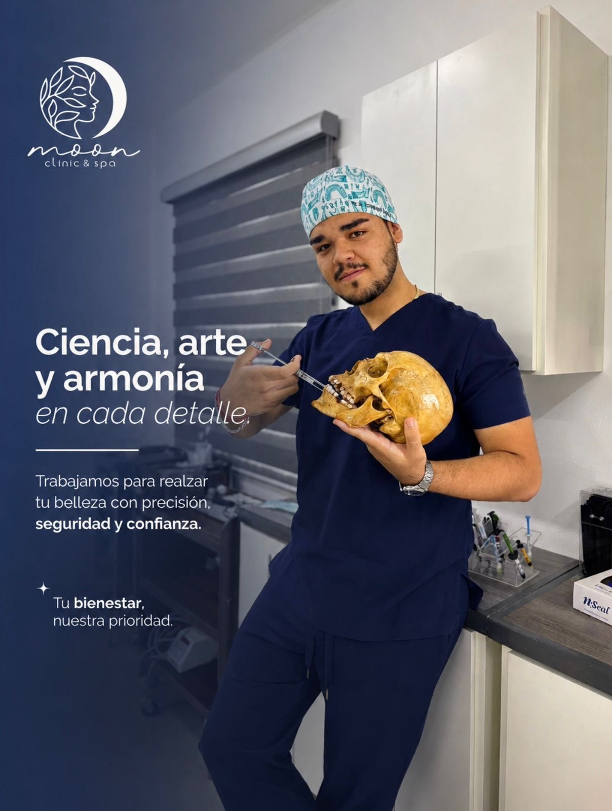
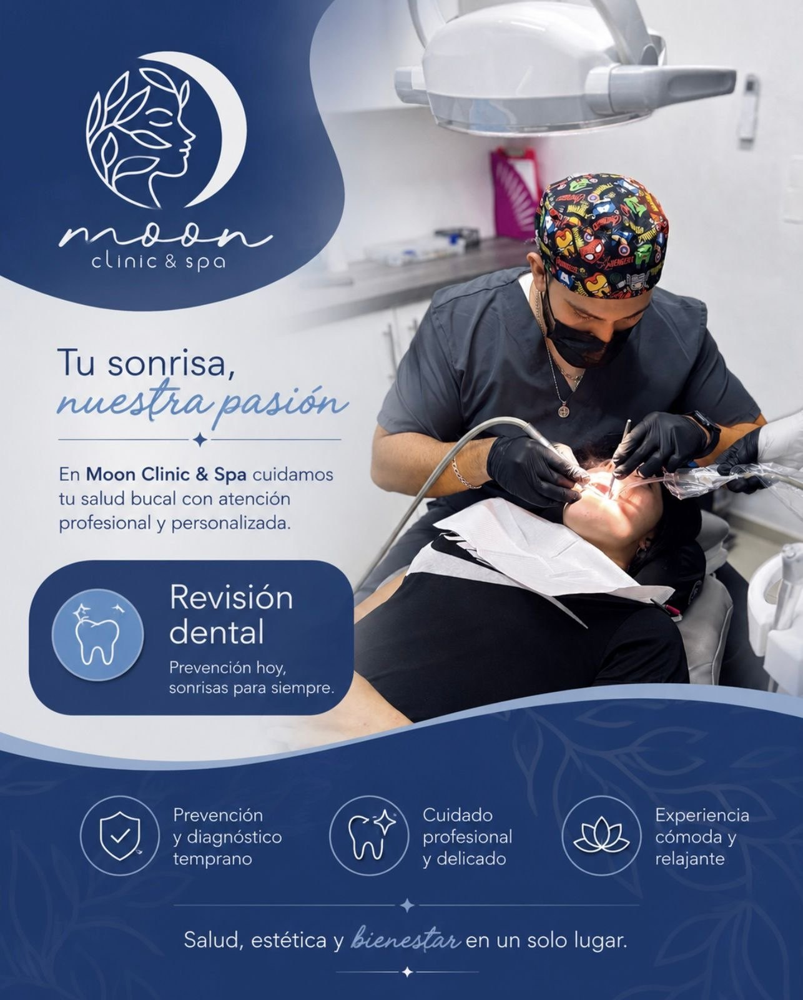
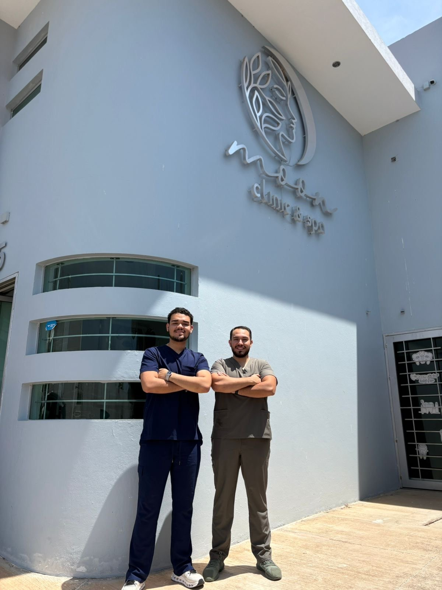
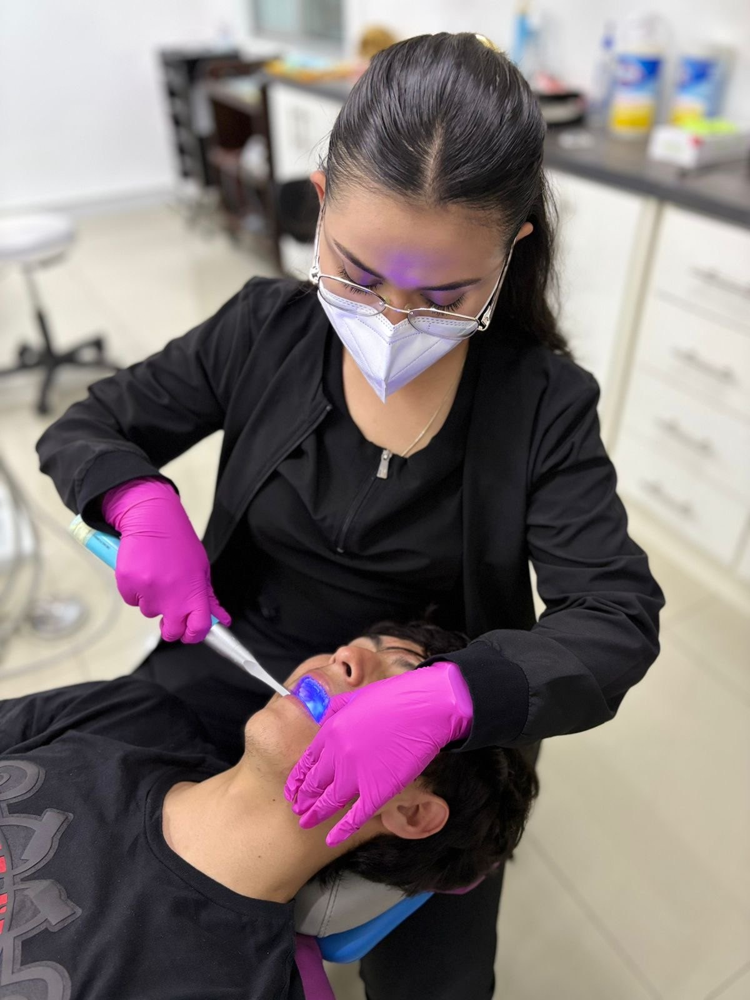
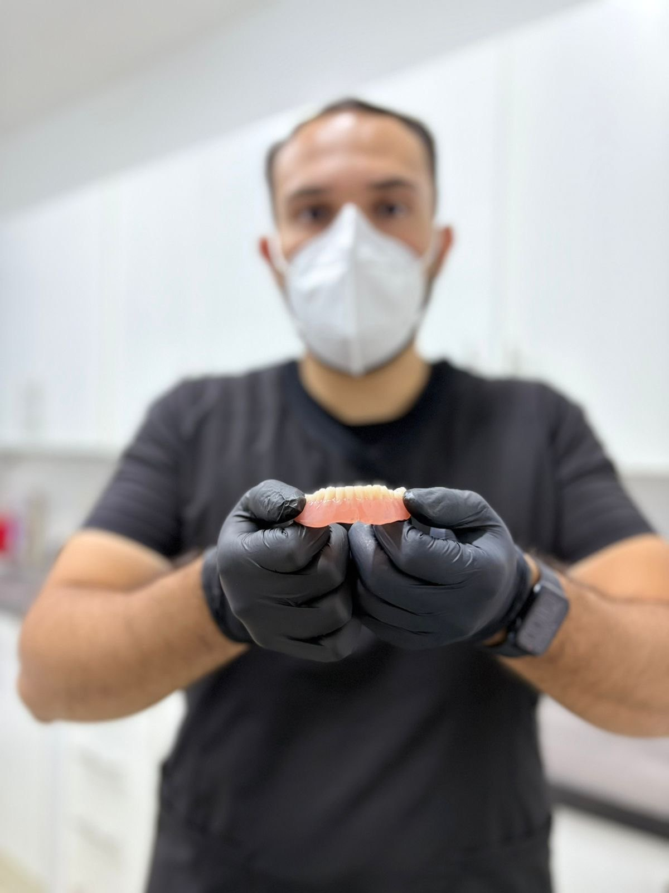
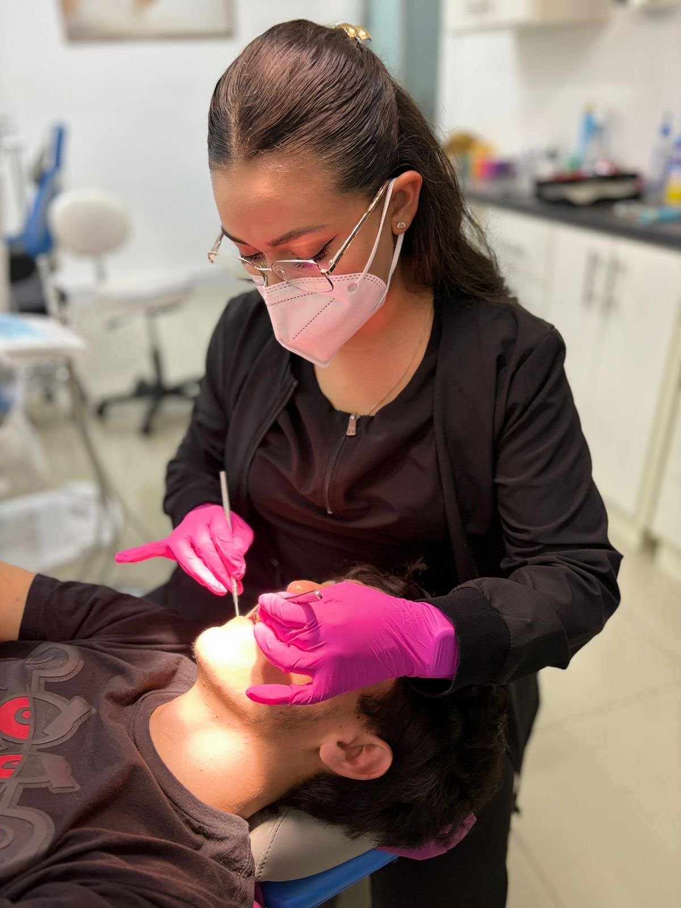
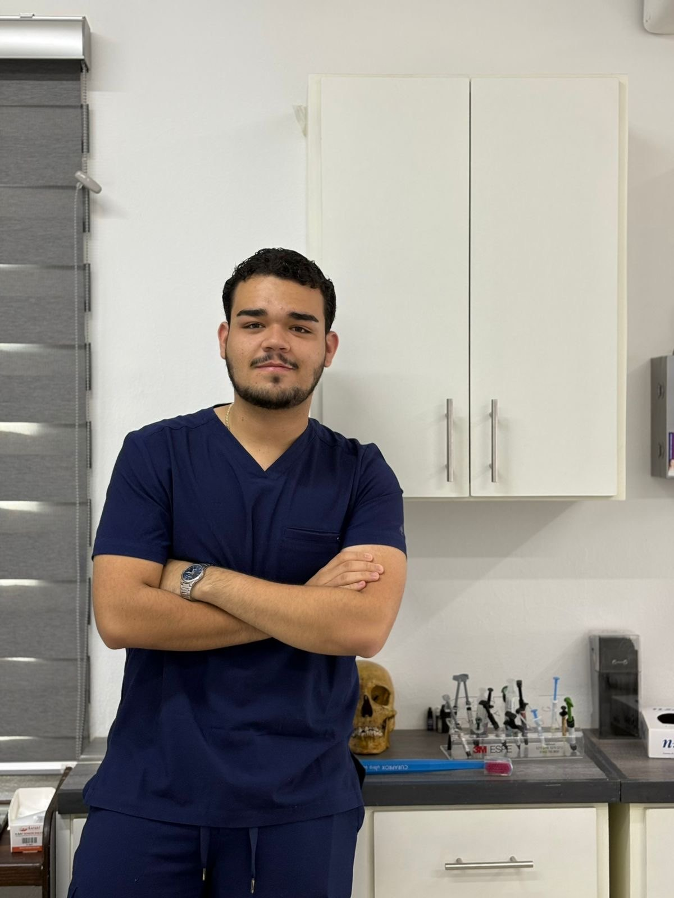
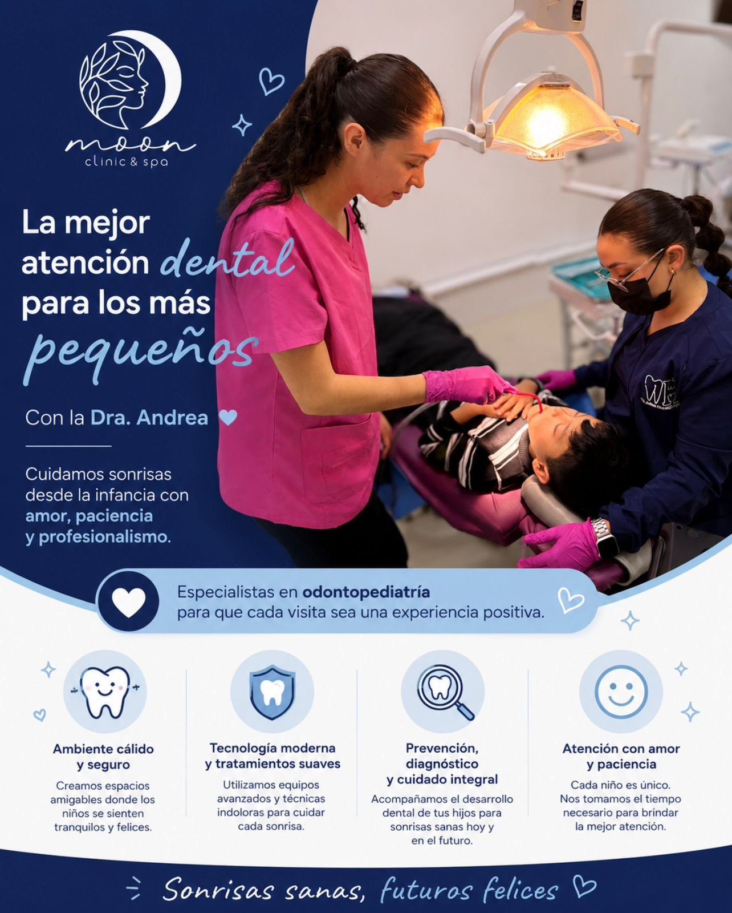

Comunicación clara y trato cercano durante el proceso de atención.
Clínica dental y bienestar
Atención dental profesional, cercana y enfocada en tu bienestar.
En Dental Moon Clinic & Spa te acompañamos con una atención humana, clara y orientada a cuidar tu salud bucal. Agenda tu valoración o envía un resumen de tu motivo de consulta.
WhatsApp: Pendiente por confirmar
Horario: Pendiente por confirmar

Ciencia, arte y armonía en cada detalle
Servicios dentales
Tratamientos organizados para publicar solo lo confirmado.
La página está diseñada para mostrar servicios reales. Donde falte confirmación, el contenido queda marcado como pendiente para evitar información médica o comercial no validada.
Revisión dental
Valoración inicial para orientar el siguiente paso de atención dental. Alcance y disponibilidad: pendiente por confirmar.
Odontopediatría
Atención dental para pacientes pequeños. Profesional responsable, horarios y condiciones: pendiente por confirmar.
Limpieza dental
Servicio sugerido en la estructura, pendiente de confirmación antes de publicarse como disponible.
Blanqueamiento dental
Debe confirmarse disponibilidad, valoración previa y condiciones clínicas antes de publicarlo.
Resinas y restauraciones
Tratamiento pendiente de confirmación de disponibilidad, indicaciones y alcance.
Prótesis dentales
Opciones de rehabilitación dental sujetas a valoración profesional. Servicio pendiente por confirmar.
Ortodoncia o alineadores
Confirmar si ofrecen ortodoncia, Invisalign u otros alineadores antes de publicar.
Urgencias dentales
Debe confirmarse si cuentan con atención de urgencias, horarios y canal de contacto.

Agenda tu valoración
Da el primer paso con una orientación clara.
El sitio está preparado para que tus pacientes puedan enviar su motivo de consulta por WhatsApp, solicitar una llamada o completar el formulario de diagnóstico orientativo.
- Resumen de consulta listo para enviar por WhatsApp.
- Campos para dolor, zona dental y síntomas.
- Mensaje preventivo: no sustituye una consulta profesional.
Por qué elegirnos
Una experiencia pensada para dar confianza desde el primer contacto.
Comunicación clara
La página explica el proceso y evita promesas clínicas no confirmadas.
Diseño mobile first
Optimizada para que el paciente contacte fácilmente desde celular.
Imagen real de marca
Integra el logo oficial y fotografías autorizadas compartidas para el sitio.
Conversión directa
Botones a WhatsApp, llamada y formulario listos para activarse con datos oficiales.
Fotos reales autorizadas
Conoce el ambiente de Dental Moon Clinic & Spa.
Estas imágenes fueron proporcionadas para integrarse en la página. Las fotos de tratamientos o pacientes deben mantenerse solo si cuentan con autorización de uso.






Proceso de contacto
Así puede iniciar una cita el paciente.
Enviar mensaje
El paciente escribe por WhatsApp o llena el formulario del sitio.
Compartir motivo
Puede indicar dolor, zona dental, tiempo de evolución y comentarios.
Confirmar disponibilidad
El equipo confirma horarios una vez agregados los datos oficiales.
Acudir a valoración
La valoración final debe realizarla un profesional de la salud dental.
Diagnóstico orientativo
Agrega tu motivo de consulta y envíalo a la clínica.
Este módulo ayuda a ordenar la información antes de una cita. No genera un diagnóstico médico ni reemplaza la valoración profesional.
Aviso importante:
Este formulario no sustituye una consulta profesional ni representa un diagnóstico médico. La valoración final debe realizarla un profesional de la salud dental.
Ubicación y horarios
Dirección
Horarios
Teléfono
Correo
Visítanos en Dental Moon Clinic & Spa.
Pendiente por confirmar
Pendiente por confirmar
Pendiente por confirmar
Pendiente por confirmar
Preguntas frecuentes
Respuestas claras antes de agendar.
Estas preguntas están redactadas de forma prudente para no afirmar datos aún no confirmados.
¿Puedo agendar por WhatsApp?
Sí, la página está preparada para recibir mensajes por WhatsApp. El número oficial está pendiente por confirmar en la configuración.
¿El diagnóstico del formulario es definitivo?
No. El formulario solo organiza la información inicial. La valoración final debe realizarla un profesional de la salud dental.
¿Qué servicios ofrecen?
El material compartido incluye revisión dental y atención dental para pacientes pequeños. La lista completa de servicios debe confirmarse antes de publicar la versión final.
¿Dónde se encuentra la clínica?
La dirección y el enlace de Google Maps están pendientes por confirmar. El sitio ya incluye el espacio para mostrarlos.
¿Manejan promociones?
No se muestran promociones porque no se proporcionó una promoción vigente y confirmada.
Contacto
Agenda tu cita o solicita orientación.
Cuando confirmes WhatsApp, teléfono, correo y dirección, los botones quedarán activos automáticamente desde el archivo js/main.js.